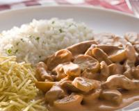
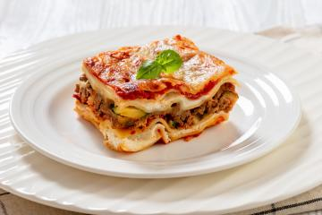

Bem-vindo ao Dicas de Receitas
Aqui você encontra as melhores receitas para todos os gostos e ocasiões. Explore nossa coleção e descubra novas favoritas!
Nossas Sugestões
Carne de Panela com Batata
Carne de panela é um delicioso prato brasileiro de carne bovina cozida lentamente, repleta de temperos e legumes suculentos.

Strogonoff de Carne
Strogonoff de carne é um prato irresistível de carne bovina em tiras, cozida em um molho cremoso de creme de leite, ketchup e mostarda, servido com arroz e batata palha.

Lasanha
Lasanha é um prato clássico italiano com camadas de massa, carne moída, molho de tomate e queijo derretido, assada até borbulhar e dourar.